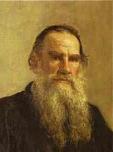

William Shakespeare (1564–1616)

- Känd för: En av världens mest inflytelserika dramatiker och poeter. Hans verk har format engelskspråkig litteratur och dramaturgi.
- Kända verk: Hamlet, Romeo och Julia, Macbeth, En midsommarnattsdröm.
- Stil: Shakespeare skrev både tragedier, komedier och historiska pjäser. Han utforskade teman som kärlek, makt, svek och mänskdivns natur.
Leo Tolstoj (1828–1910)

- Känd för: Tolstoj är en av de största ryska författarna, känd för sina realistiska och filosofiska romaner.
- Krig och fred, Anna Karenina.
- Stil: Hans verk fokuserar ofta på moraliska och etiska dilemman, med en stark tonvikt på fred, kärlek och andlighet..
Virginia Woolf (1882–1941)

- En banbrytande modernistisk författare som experimenterade med ström-av-medvetande-tekniken.
- Mrs. Dalloway, Mot fyren, Orlando.
- Stil:Woolf undersökte ofta kvinnors roller i samhället, tidens flykt och den inre psykologin hos sina karaktärer.